Statistics Enhancements
The statistics window sums up what you need in detail: a town's cargo as one figure, a station as one figure, a vehicle's balance without what it earned and cost. This mod adds a Rank column and largest-first sorting to every table, shows towns per cargo, vehicles with their income and running costs and stations terminal by terminal, and turns a statistics button in the game bar red when its table has something to look at.

Every statistics table
Rank Column
Setting: Rank Column · On by default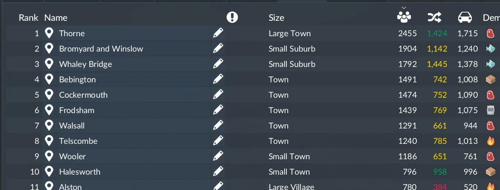
- 1Rank: each town's place in the current order.
- 2Sorted by population: the first click puts the largest town first (Sort Largest First).
Why
The statistics tables have no place numbers. To see where a town or a line stands, or how many rows a search leaves, you count down the list.
What it does
Every statistics table starts with a Rank column: each row's place in the current order, so you can see where a town or line stands and count rows at a glance. With no column sorted, the rows are numbered as listed.
Good to know
- Rows with equal values share a place (1, 2, 2, 4): seven vehicles in Very Bad condition are all 1st, the next one is 8th.
- Only the rows the filters and the search leave are counted.
Sort Largest First
Setting: Sort Largest First · On by defaultWhy
In the game, the first click on a column header sorts smallest first, so the biggest towns, the busiest stations and the lines with the highest balance end up at the bottom of the list.
What it does
The first click on a column header sorts largest first: most population, most cargo, highest balance. Names and other text columns still sort A to Z first, and the Towns tab's rating gauges (reputation, traffic, happiness, delivery, noise, pollution) sort worst first, so the towns with a problem come to the top. Click the header again for the other order.
Scroll to Top on Sort
Setting: Scroll to Top on Sort · On by defaultWhy
After a sort, a long table stays scrolled where it was, so the top of the new order is out of sight.
What it does
Whenever you sort a table, it jumps back to its first row.
Towns tab
Town Cargo Columns
Setting: Town Cargo Columns · On by defaultThe Towns tab of a world with 26 towns, the game sorted by name, the mod in list order. Colchester's one figure, 234 of 1,595 supplied, becomes a figure per cargo: one cargo nearly all supplied, one hardly, four not at all.
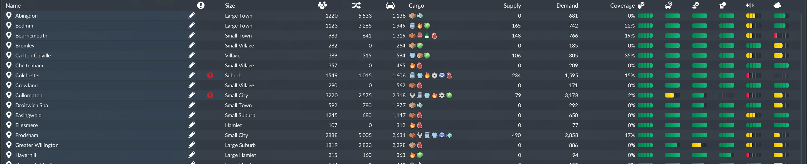
- 1Cargo: the cargos the town wants, as icons only.
- 2One Supply, Demand and Coverage figure for all cargos: Colchester gets 234 of 1,595, 15 %.
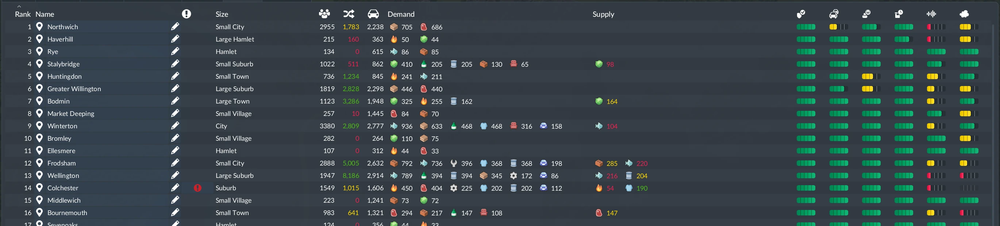
- 1Demand: each cargo the town wants, with its amount, largest first.
- 2Supply per cargo, coloured by the share of its demand met: Colchester's 190 of 202 in green, 54 of 450 in red.
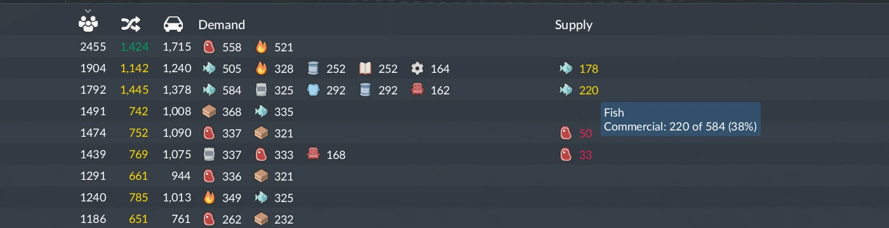
- 1The cargo, then each district that wants it: how much of its demand is met, and the share.
- 2Red: less than a third met, here 50 of the 337 meat Cockermouth wants.
Why
The Towns tab shows one figure each for Supply, Demand and Coverage, summed over all cargos, and the cargos as a row of icons. You can't tell which cargo a town lacks without opening its window.
What it does
The four columns become two. Demand shows each cargo the town wants with its amount, largest first. Supply shows each cargo your lines supply with its amount, coloured by the share of its demand met, as the town window rates supplies: green from 67 %, yellow from 33 %, red below.
Good to know
- Hover a supply figure for the cargo's supply of its demand in each district (residential, commercial, industrial), and for the whole town when more than one district wants it.
- Demand sorts by the town's total demand, Supply by the share of all demand met, as the game's Coverage column did.
- The Name, Population, Public Transport and Private Transport columns are narrower to make room.
Town Cargo Filter
Setting: Town Cargo Filter · On by default
- 1The cargo list next to the eye; All Cargo shows every town.
- 2Every cargo some town demands, as its icon.
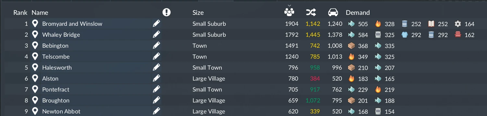
- 1Rank counts only the towns the filter leaves.
- 2Every town left wants fish.
Why
To find a buyer for a cargo you need the towns that want it, and the Towns tab can't be narrowed down to them.
What it does
The Towns tab gets a cargo list next to the eye. Pick a cargo to see only the towns that demand it; All Cargo shows them all again.
How to use
- Open the statistics window's Towns tab.
- Pick a cargo in the list next to the eye.
Good to know
- Works together with the eye and the search.
- Keeps your choice until you quit the game.
Public Transport Coverage
Setting: Public Transport Coverage · On by default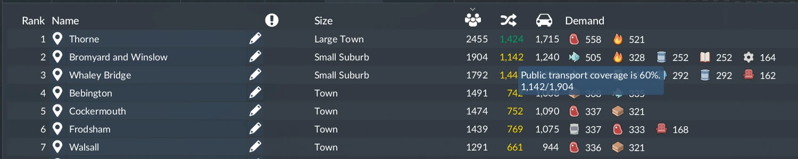
- 1Public Transport: the game's number, coloured by the town's public transport coverage.
- 2The tooltip: the coverage and the passengers served, as the town window gives them.

- 1Passengers: 1,142 of 1,904, rated Good in yellow, the colour the Towns tab now gives the town.
Why
The Towns tab's Public Transport figure is the game's public transport reachability of commercial and industrial places. How well your lines serve a town's people is another figure, the passenger row of the town window's Supplies tab, and you have to open each town to see it.
What it does
The Public Transport figure keeps the game's number but is coloured by the town's public transport coverage, the passenger row of the town window's Supplies tab: green from 67 %, yellow from 33 %, red below, as the town window colours it. Hover the figure for the coverage as the town window gives it ("Public transport coverage is 60%." and "1,142/1,904").
Good to know
- The number itself stays the game's, so it can differ from the town window's passenger figure; the colour and the tooltip are the town window's.
- Sorting by the column still sorts by the game's number.
Vehicles tab
Vehicle Columns
Setting: Vehicle Columns · On by defaultThe Vehicles tab, the game alone and with the mod, in different orders. With the mod it is sorted by Condition: the seven vehicles in Very Bad condition share rank 1.

- 1The game: the vehicle picture first, then the line.
- 2Condition as plain text, and Balance as the only money figure.
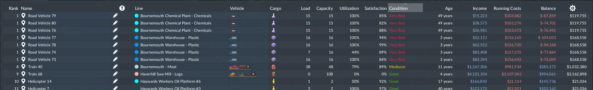
- 1Line first, with the room the small vehicle picture doesn't need.
- 2Condition in the vehicle window's colours.
- 3Income and Running Costs, then Balance, then the running cost a year.
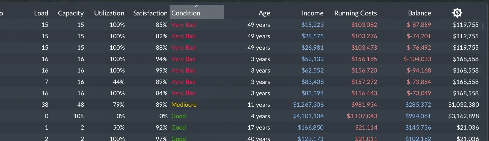
- 1Condition coloured like the vehicle window's condition bar: Very Bad in red, Mediocre in yellow, Good in green.
- 2The last 12 months: Train 68 earned $4,101,104 and cost $3,107,043 to run, a Balance of $994,061.
- 3The running cost a year at today's rate, as at the foot of the vehicle window.
Why
The Vehicles tab shows a vehicle's Balance but not what it earned and what it cost, and its condition only as a word. The vehicle picture takes room the line names need.
What it does
Line comes before Vehicle and gets the room the vehicle picture doesn't need; Cargo, Load, Capacity, Utilization and Satisfaction are narrower.
Before Balance come Income and Running Costs from the vehicle window's Balance card, over the same last 12 months, so Income minus Running Costs is the Balance. The last column is the vehicle's running cost a year at today's rate, as shown at the foot of the vehicle window. Condition is coloured like the vehicle window's condition bar: green, yellow or red.
Good to know
- Running Costs is what the vehicle cost over the last 12 months; the last column is what it costs a year at today's rate.
Stations tab
Station Columns
Setting: Station Columns · On by defaultThe Stations tab, the game alone and with the mod, both sorted by Utilization; the game's view starts further down the list.

- 1The game: one line count and one word for the station's type.
- 2Utilization and Delay: one figure for the whole station.

- 1The terminal count, Type with its counts, and how many of your lines stop at each terminal.
- 2The waiting hall, then each terminal's waiting passengers and capacity.
- 3Delay: the unhappy passengers at each terminal.
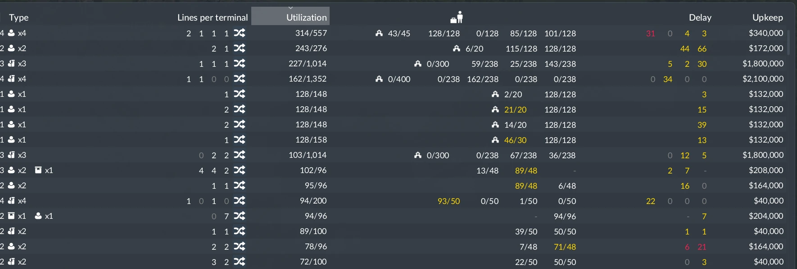
- 1Lines per terminal: 2, 1, 1 and 1 of your lines at Petworth Station Annex's four terminals.
- 2The waiting hall first: 43 waiting for its 45 places.
- 3Then each terminal: Stop #77's first one has 93 waiting for 50 places, in yellow, the others are nearly empty.
- 4Delay per terminal: 22 unhappy passengers at that first terminal.
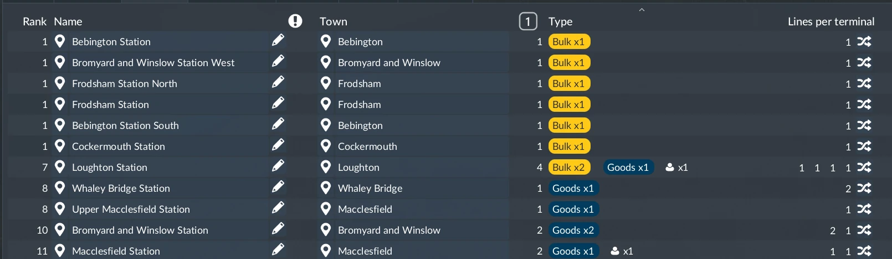
- 1Six stations with one bulk terminal share rank 1; the next one is 7th.
- 2Terminals: how many the station has.
- 3Loughton Station: 2 bulk, 1 goods and 1 passenger terminal, the cargo classes as pills in their own colours.
Why
The Stations tab sums each station up: one line count, one word for its terminals, one Utilization and one Delay figure. A station with one overcrowded terminal and three empty ones looks fine there.
What it does
The Stations tab shows each station terminal by terminal. A Terminals column with the terminal count comes first, then Type with the kinds of terminals and their count: a person icon for passenger terminals, a half-person, half-cargo icon for terminals taking both, a cargo icon for any cargo, and each cargo class as a pill in its own colour with the count inside, like the station window. Then Lines shows how many of your lines stop at each terminal.
After Utilization, a column shows the waiting hall and then each terminal's waiting passengers and capacity, an overcrowded terminal in the station window's warning colour, and Delay shows each terminal's unhappy passengers.
Good to know
- Both per-terminal columns sort by the most at any one terminal, so a station with 60 waiting at one terminal comes before one with 30 at each of two.
- Every terminal's figure has a slot of the same width, packed to the right, so the figures line up from station to station. As many terminals show as the column has room for; the rest are listed on hover.
- Name and Town are narrower, with the full name on hover when it is cut.
- With Line Enhancements, its Assign Lines button stays at the right of the Lines column.
Game bar
Problem Buttons
Setting: Problem Buttons · On by default
- 1Red: this table has something to look at, here Vehicles, Stations, Warehouses and Towns.
- 2Hover it: the towns with a problem notification, as the Towns tab's Problems column shows them.
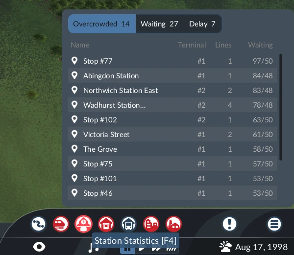
- 1Overcrowded: The Drive's terminal 1 holds 59 passengers for 50 places.
- 256 wait at The Avenue for a line whose vehicles together seat 18: it needs more vehicles.
- 3Delay: 25 of the 62 passengers waiting at Park Avenue are unhappy.

- 1Carlton Colville Warehouse's crude oil fills 99 % of the room it has.
- 2Five more warehouses: the tooltip names three per kind.
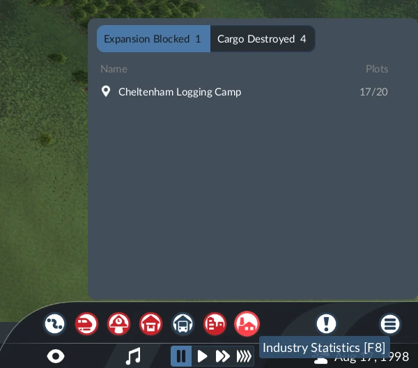
- 1Without the mod, only Cheltenham Logging Camp's own window says it can't grow.
Why
Some problems show only deep in a window or a table: an industry that can't expand, a warehouse about to fill up, a station where passengers pile up, a depot that can't keep up with maintenance. Nothing in the game bar tells you where to look.
What it does
The statistics buttons in the game bar turn red while their table has something to look at, so you see at a glance where to check. Hover a red button to see what it found and where, up to three names per kind; the button's hotkey stays beside its title.
Every table with a Problems column counts the elements with a problem notification, as that column shows them. Some buttons check more:
Vehicles: vehicles in very bad condition.
Depots: depots and maintenance buildings whose maintenance pool is full while vehicles in their maintenance area are maintained nowhere and wear down. The tooltip says how many, and how many vehicles the pool served in the last 30 days.
Stations: a terminal the station window marks as overcrowded; more passengers waiting for a line at a stop than all of that line's vehicles seat together, so the line needs more vehicles; or at least 10 unhappy passengers who make up 30 % of those waiting (the Delay column). Each counts once it has lasted while the game runs.
Warehouses: a cargo that fills 85 % of the room it has (its slots and the empty slots that take it), so there is time to act before it is full.
Industries: industries blocked from further expansion, which the game shows only in the industry's own window.
Good to know
- The checks run in small slices a few times a minute, so they cost next to nothing.
- A button follows a change within a few seconds, a blocked industry within about half a minute.
Settings
Choosing a save's mods: the gear next to Statistics Enhancements → Settings. Each save keeps its own choice. Off turns a feature off completely.
| Setting | Default | What it does |
|---|---|---|
| Rank Column | On | A Rank column first in every statistics table: each row's place in the current order. |
| Sort Largest First | On | The first click on a statistics column header sorts largest first; names still sort A to Z first, the Towns tab's rating gauges worst first. |
| Scroll to Top on Sort | On | Sorting a statistics table shows it from its first row. |
| Town Cargo Columns | On | The statistics Towns tab shows Demand and Supply per cargo: each cargo's demand, and each supplied cargo's amount, coloured by the share of its demand met. |
| Town Cargo Filter | On | The statistics Towns tab gets a cargo list next to the eye: it shows only the towns that demand the chosen cargo. |
| Public Transport Coverage | On | The statistics Towns tab colours each town's Public Transport figure by its public transport coverage (the town window's passenger supply): green from 67%, yellow from 33%, red below. |
| Vehicle Columns | On | The statistics Vehicles tab shows Line before Vehicle, narrower cargo columns, Income and Running Costs before Balance, each vehicle's running cost a year last, and Condition in its condition colour. |
| Station Columns | On | The statistics Stations tab shows each station terminal by terminal: the terminal count, Type as kinds with counts (icons for passenger, mixed and any-cargo terminals), lines per terminal, waiting / capacity per terminal after Utilization, unhappy per terminal in Delay, and narrower names with the full name on hover. |
| Problem Buttons | On | The game bar's statistics buttons turn red while their table has a problem: a problem notification, a vehicle in very bad condition, a full maintenance pool while vehicles in its maintenance area go unmaintained and wear down, an overcrowded station, more passengers waiting for a line than all its vehicles seat, or many unhappy passengers at a station, a warehouse cargo at 85% of the room it has, or an industry blocked from expanding. The button's tooltip names them. |
| Logging | Off | Writes the mod's messages to the game log (stdout.txt), for bug reports. |
More
Compatibility
Shares the statistics window with Line, Industry and Warehouse Enhancements, which add their own columns and views; the Rank column and the sorting work in those tables too. With Line Enhancements, its Assign Lines button stays at the right of the Stations tab's Lines column.